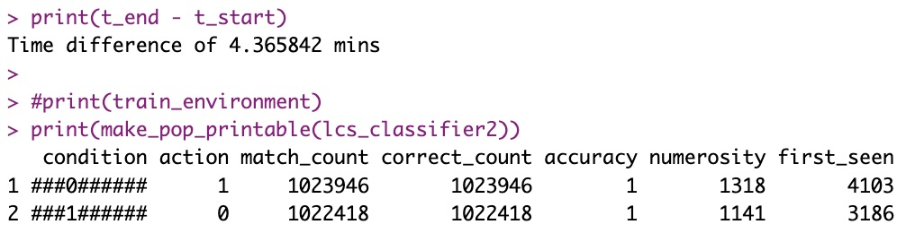
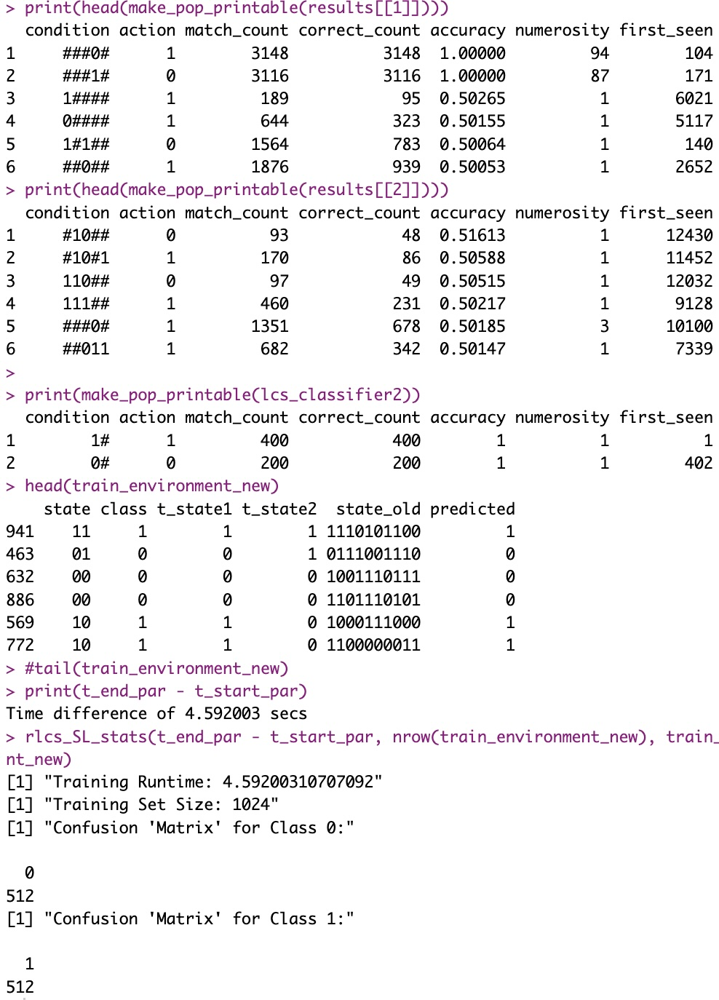

Not as easy as it might seem…
The idea
I’ve already tried to parallelize a bit the training of a supervised-learning LCS. It kinda’ works… But the more I think about it, the more I’m convinced it’s not as easy as I thought.
I initially thought of one way of parallel processing: Break the training samples in N (as many as CPU cores you wanna use) subsets, train N LCS.
Then “merge”, subsume, remove duplicates, and… Repeat.
Ideally you would bootstrap the thing with an initial epoch on all the training set, just to have relevant coverage to start with.
But there is an issue: What if your dataset is “not perfect”? Let’s suppose there isn’t a clear-cut separation between classes to be found, but rather a fuzzy separation. So there aren’t perfect rules to be discovered. Instead, in each subset, some rules work, but THEN when these are exposed to the complete dataset, the discovered classes in one subset is correct in that subset, but NOT in the overall training data?
You end up with classifiers that… Don’t work over test sets.
At least that’s my current conclusion after trying it with some messier-than-perfect datasets.
The idea, version 2
So if breaking the dataset in sub-sets does not work… What about breaking the data POINTS in different parts?
In my earlier example, I have tested (quite successfully, in my view) my RLCS on a simplified MNIST exercise.
There, I was training to classify images. The original images where too big, in their equivalent bit-strings representation, for my laptop to work on in acceptable runtimes (for my taste). I ended up compressing said images into 49 bits strings per image. It was then manageable, and it worked quite good, in little over 20 seconds of training (with the correct hyper-parameters).
But could I instead break each images in say 7x7 lines, and train on each line separately (and in parallel), and then train one more LCS on the result of that (so 7 outputs would become the input states for a new classifier system, another 7-bits train set, so to speak)?
I would then in effect, in terms of overall processing time, train approximately twice on 7 bits strings, instead of once on 49 bits strings.
Would that even work? More on that later.
But first…
The caveat
Epistasis!
Well, at least that’s how I understand it right now: Two (or more) different locations of the “genome” are required to define the phenotype. In my simple RLCS, in that case two or more bits in a state interact in a more or less complex manner so that the class is decided by said interaction. THEN, the second approach would break the assumptions!
Think of the “Mux6” example explained in this Blog a few entries ago. Two bits pointed to a position, which value was the class to be predicted. In that example, the first two bits pointed to a position in the last 4 bits.
IF I were to break the 6 bits states in say two sub-strings of 3 bits each, thinking I can learn from each sub-string and then recompose (see “idea version 2” above)… I would fail miserably: you need the complete 6-bit strings in that example for the LCS to come up with the relevant rules!
That said…
Counter-caveat: Not-bit-4 in 10-bits states
I’ve shown ad-nauseam by now the “not-bit-4” example. In the example so far, I have used 5 bits strings. So the “search space” was that of 5 bits. And the solution was simple in that one bit would suffice to predict the whole class.
But that was arbitrary, and meant to be simple.
What if we were to be faced with the exact same rule to be found in 10-bits strings? The solution would be just as simple (two rules would suffice), but the search space would be comparatively… Well, way bigger.
In 5-bits, the not-bit-4 is fully expressed with 32 states.
In 10-bits, the SAME not-bit-4 classifier works with… 1024 states (total). For a perfect data mining exercise, you need to find a ruleset that perfectly matches all 1024 states, and you need to try combinations of 3 possible values per-bit (our ternary alphabet: {‘#’, ‘0’, ‘1’}). If I’m correct, that could be up to about (59049-1)/2 possible unique classifiers to potentially check (coverage ensures here that not-bit-4 is respected, so that’s only half the overall 10 bits strings… And the ‘##########’ option is not valid for us…). Well, approximately anyway.
And let’s remember, an LCS is expected to output a combination subset of these 29.5K classifiers as an output System, which could be a very large search space indeed… (In a real world setup, that is.)
However! Well, let’s try to apply the logic of my approach number 2 above to break down the exercise and then see what would happen in such a simple case…
Imagine I break down the exercise into 3 trainings:
The first 5 bits (which in fact are more than enough) per state, creating \(RLCS_1\)
The last 5 bits per state (completely irrelevant, but we don’t know that upfront), creating \(RLCS_2\)
Then the outputs of the above to train a third LCS, \(RLCS_{combined}\)
The hope is that we can train the first two in parallel, and use the predictions of these two in combination to then train a third classifier (which incidentally here would be exposed to 2-bits states).
So I’d expect to reduce the search space quite a bit. And hence the training times.
Well, here goes the results, and heck!
Parallel runtime using the approach described here to break the problem in just two 5-bit string sub-problems, less than 5 seconds:

Compared to original sequential time on the 10-bit string, more than 4 minutes:

The result however is slightly more difficult to interpret (that is, in the current version of this exercise, which I just wanted to see working, but it is not clean…). In particular, each subset I have to keep (for now) better than chance results (anything > 0.5), but that’s just because it’s a dirty example, it can be made cleaner for sure:

Still, from “> 4 minutes” to “< 5 seconds”! But then again, this will only works for such a problem where the solution did exist in a subset of original bit-strings.
Trick: Why so fast?
Well, for one, I am NOT in fact browsing in parallel through 1024 states!
See, each sub-string of 5 bits and its class, as a subset can be de-duplicated! There are a lot of repeated instances, particularly in the first subset, whereby all entries that say “00000 -> class 1” appear 32 times (one for each of the continuing 5-bit strings for the rest of the original state).
That kind of deduplication can reduce processing efforts indeed :)
Conclusion
I haven’t tested it yet, but I would wager this approach should work just fine on images, as described above, breaking images in lines and then combining classifiers…
Parallelizing training is an obvious idea (to me) in concept: For some examples, training is slow, and so running it in N parallel processes must be faster (for, you know, complicated examples).
But as explained in some detail today, it’s not that simple! It might work in some cases, as explained, but in the “real world”, we wouldn’t know upfront whether it would in fact work, would we? And so we might have to do some trial-and-error…
But even just running tests on new datasets, as explained above, might allow us to:
Either see how we can run fast in parallel on a given dataset
Or find out that the dataset cannot be broken the way we have initially chosen, indicating possible “epistasis”, which in itself would be interesting
Or – and that could happen – that the chosen dataset cannot be broken down as we would like it to, for an LCS to come up with a proposed classification solution (think Yahoo finance historical data… Yes, I’ve had a quick look, but that’s not relevant… Suffice to say, I won’t beat the markets just yet :D:D:D)
I’ll work on that parallelizing stuff some more… Even if that’s not part of the package itself, it’s more about data preparation and how to use the package, I am aware. But demonstrating how the future RLCS package can hopefully be used and competitive compared to a Neural Network (for instance) is part of my overall objective, I guess.
Fun stuff (to me) all of it :)